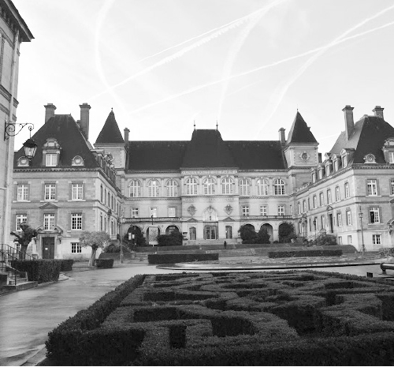

Con chim ở đậu cành tre,
Con cá ở trọ trong khe nước nguồn
Tôi nay ở trọ trần gian…”
Tôi hát khe khẽ khi bước vào phòng trọ đầu tiên của mình trên đất Pháp. Căn phòng trọ rẻ tiền ấy thực ra nằm trong khu ký túc xá quốc tế đẹp và hoành tráng của Paris: Cité Universitaire ‒ một khuôn viên rộng mênh mông với các tòa nhà, vườn hoa, sân bóng, thư viện, nhà ăn… Mỗi tòa nhà trong khu này ưu tiên cho sinh viên đến từ một nước, một khu vực địa lý hay một chuyên ngành nào đó. Những sinh viên sống ở đây được hưởng nhiều quyền lợi và hỗ trợ của chính phủ, có rất nhiều sinh viên được ở miễn phí. Nhưng để giành được một suất ở chính thức như vậy, bạn phải là sinh viên đi du học theo diện học bổng chính phủ, hoặc phải làm hồ sơ, nộp đơn chờ đợi xét duyệt rất lâu, có khi cả năm trời.

Cité Université. (Ảnh: Tác giả).
Còn tôi mới đến Paris có bốn ngày. Tôi ở đây theo đúng kiểu “ở trọ”, tức là chỉ ở tạm thời và trả tiền theo từng ngày, bởi thế mà mức phí đắt hơn nhiều so với giá thuê hàng tháng của các sinh viên trong khu này, tuy nhiên, với chúng tôi, đó đã là mức giá rẻ nhất có thể rồi. Căn phòng đúng ra chỉ dành cho một người, nhưng chúng tôi có hai, vì thế một đứa đàng hoàng làm giấy tờ, còn đứa kia vào theo kiểu “ở chui”. Một đứa được phát cái thẻ nhựa có đục lỗ để mở cửa bếp hay khu phòng tắm, nhà vệ sinh một cách đàng hoàng, đứa còn lại kiếm cái thẻ điện thoại cũ ngồi mài mài, đục đục một lúc thì cũng được đi toilette đàng hoàng không kém. Trong phòng chỉ có một cái giường đơn, vì thế, đứa được nằm giường thì sẽ không có đệm, chỉ trải chăn để nằm, còn đứa kia thì trải đệm xuống đất, chuyện ngủ và vệ sinh như thế là giải quyết xong.
Trong phòng ngoài cái giường ra còn có thêm một tủ quần áo, một cái bàn và một cái ghế. Nhà vệ sinh, buồng tắm và bếp đều ở bên ngoài, dùng chung.
Cả tôi và cậu bạn ở chung phòng đều đã trải qua đời sinh viên, nhưng chưa từng nếm mùi ở trọ, cái gì cũng bỡ ngỡ. Từ phòng tôi ra bếp chung khá xa, nấu được bữa cơm hai đứa cứ chạy đi chạy về mãi, lại còn thiếu thốn đủ thứ. Nhớ hôm đầu thèm cơm rang mà rang lên nếm đi nếm lại cứ thấy nhạt nhạt, thiêu thiếu cái gì, thêm muối mãi vẫn thấy nhạt. Tối ăn xong thì khát nước khủng khiếp, hóa ra không phải vì thiếu muối mà là thiếu nước mắm, thiếu mì chính: những thứ mà bên này không dễ gì có được, nhất là ở bên này không ai ăn mì chính.
Chúng tôi ở khu nhà trọ đó hơn một tháng, giờ nghĩ lại vẫn có nhiều chuyện buồn cười đến chết. Có hôm đi học về, thấy trên đường đầy thứ hạt gì giống như hạt dẻ, mà rất to, hai thằng hớn hở bảo nhau đúng là xứ văn minh, hạt dẻ rụng đầy đường mà không ai buồn nhặt. Chúng tôi liền nhặt về một túi to, đợi tối ăn cơm xong thì mang ra bếp nướng để “nhâm nhi” trong lúc học đêm, ai dè để được một lát thì khói um lên, hệ thống chống cháy tự động rú chuông, phun nước các hành lang, sinh viên chạy ùa ra, nhiều anh chị chỉ mặc quần áo lót, vừa chạy vừa chửi đứa nào nghịch dại. May mà khu ký túc xá chưa có camera nên hai chú “ngố” Việt Nam không bị phát hiện, và hai chú ngố cũng quần áo ngủ chạy ra ngoài, vừa chạy vừa chửi thật to thằng điên nào làm ông phải khổ. Sau này mới biết muốn nhặt hạt dẻ cũng dễ, nhưng phải vào rừng, còn loại cây có hạt giống như thế trồng trong phố thì không ăn được, mà hạt có rất nhiều nước, khi cho lên bếp thì hiển nhiên khói sẽ bốc lên nghi ngút như cháy nhà.
Ở đây, mỗi tầng sẽ có một khu nhà tắm dành cho nam và một khu cho nữ. Tôi không biết bên khu nữ thế nào, còn bên khu nam, để hạn chế các anh tắm quá lâu tốn nước, các công tắc điện đã được lập trình sẵn để mỗi lần bật, đèn sẽ sáng tối đa hai mươi phút, sau đó thì tự động tắt. Nếu ai tắm lâu hơn thì cứ một lúc lại phải quấn khăn mò ra bật lại đèn. Nhìn ông bạn thư sinh cẩn thận và sạch sẽ, tôi biết anh chàng này thế nào cũng tắm lâu nên hai thằng cùng vào hai phòng tắm cạnh nhau, tôi tắm xong thì chào đi về trước, nhưng tôi không về, đứng đợi ở gần cái công tắc tổng, một lúc sau đúng là đèn tắt, thấy ông bạn vừa lẩm bẩm kêu ca, vừa quấn khăn mò ra lần tìm công tắc, đợi đến gần thì tôi quát to một tiếng, ông bạn hoảng quá vứt cả khăn chạy ra hành lang, vừa chạy vừa hét làm các cô trong phòng cũng nhao ra, rồi nhìn thấy ông bạn của tôi trong tình trạng ấy thì lại hét lên và lao vào phòng đóng chặt cửa lại. Thế mà người ta bảo là học trò chỉ đứng thứ ba về nghịch phá.
Một tháng ở ký túc xá là một tháng nhớ quê nhà đến quay quắt, nhớ quặn ruột. Một gã trai 23 tuổi như tôi, quậy phá suốt những năm trung học rồi đại học, hoạt động sôi nổi, gặp đủ loại người, va chạm đủ mọi thứ chuyện, đã tưởng mình chai sạn lắm, trưởng thành lắm, khi xa nhà cũng chỉ như đứa trẻ thèm hơi mẹ, giá được khóc gào lên như em bé thì chắc cũng nguôi ngoai được phần nào. Nhưng không khóc, không than thở, bởi vậy nỗi nhớ mới càng quằn quại hơn: Nhớ Hà Nội, nhớ nhà, nhớ gia đình, nhớ bạn bè và nhất là hình bóng của một người con gái. Nhớ từ những thứ hoành tráng ấn tượng đến những thứ tầm thường nhất. Mỗi đêm, ký ức tôi lại soạn ra đủ những món ăn hoài niệm cho mình nằm gặm nhấm, gặm đến năm giờ sáng, mệt quá cũng ngủ thiếp đi, hôm nay gặm mãi chưa hết, đêm mai lại nằm gặm tiếp.
Một tháng ở ký túc xá là một tháng mong thư, ngồi đọc thư rồi lại viết thư. Internet hồi đó còn là một thứ xa xỉ, ở Việt Nam không phải ai cũng có, nếu có thì việc dùng cũng hạn chế, nên thư tay vẫn là phương tiện liên lạc thường xuyên nhất. Ngoài những lúc đi học và nấu nướng, ăn uống tắm giặt, còn lại tôi chỉ đọc thư và viết thư. Lần đầu tiên khám phá ra rằng đọc thư thôi cũng có thể đem lại đủ thứ cảm giác: hạnh phúc, vui vẻ, đau đớn, hoài nghi, khao khát… Đọc thư mà có lúc người nóng ran lên, trán toát mồ hôi như phát sốt, có lúc cười tủm tỉm, mắt long lanh, có lúc cáu kỉnh vo viên lá thư ném vào một góc, rồi lúc sau lại mang ra vuốt vuốt, nâng niu như báu vật. Có lá thư đọc xong giấu kỹ quá, mấy hôm sau tìm không thấy thì phát điên lên, lục tung nhà vẫn không thấy đâu liền ngồi thừ ra cả buổi, đến nỗi cậu bạn chạy đến sờ đầu, lay hỏi, tưởng mình hóa đá rồi. Nói tóm lại, chỉ vì mấy lá thư thôi mà biến mình thành một kẻ như mất trí. Có lá thư đọc đi đọc lại cả chục lần, thuộc cả dấu chấm dấu phẩy, nhớ cả chữ nào bị nhòe vì nước mắt người viết mà vẫn còn đọc lại nữa. Đọc rồi lại ngồi viết, viết rồi gửi đi, rồi hồi hộp mong chờ hồi âm, rồi lại trả lời. Có lúc tôi tự nhủ: “Mình đi cả chục ngàn cây số sang đây để du học hay là để ngồi đọc thư?” Nếu chỉ thế này thì ở nhà cho xong.
Một tháng ở ký túc xá là một tháng ăn ruốc, vì lúc đi mẹ tôi bảo để mẹ làm thật nhiều ruốc, sang Pháp lúc nào bận học hay không có thời gian hoặc thèm món Việt Nam thì lấy ra ăn. Sang đây học chưa bận lắm, thời gian vẫn có, cũng chưa thèm món ăn quê nhà nhưng đi chợ nhìn giá quy đổi ra tiền Việt thì không dám mua gì, chưa kiếm được việc làm thêm thì càng không dám tiêu, thành ra tôi chỉ ăn ruốc. Sáng thì ruốc kẹp bánh mì, trưa thì mì tôm nấu ruốc, tối về lại nấu cơm ăn với ruốc cùng trứng tráng. Hồi đó tôi ăn ruốc nhiều đến nỗi cả chục năm sau ngửi thấy mùi ruốc đầu óc vẫn còn quay cuồng không nghĩ được gì. Ăn đến nỗi hồi đó có một đêm, tôi mơ giấc mơ kỳ lạ, bản thân biến thành một chú chó nhưng không sủa “gâu, gâu” mà luôn gắt lên “ruốc, ruốc”. Chắc tôi nhớ đến việc mỗi khi gặp bạn ở trường chúng nó lại hỏi hôm nay mày ăn gì. Tỉnh dậy, nghĩ đến giấc mơ ấy, tôi lại cười đau bụng, cười đến chảy nước mắt.
Một tháng ở ký túc xá là một tháng tôi vật lộn với cơn thèm thuốc lá. Thời sinh viên tôi hút nhiều thuốc, nhất là mỗi khi thức đêm học thi hay làm lập trình trên máy tính, có khi tôi hút hơn một bao thuốc chỉ trong một đêm. Trước lúc lên máy bay tôi rít một điếu thuốc cuối cùng với cậu bạn và hô “Quyết tâm, quyết tâm”. Tôi biết rằng thuốc lá ở Pháp đắt hơn ở Việt Nam đến chục lần, mà tôi thì chẳng biết có đủ tiền ăn không nữa. Quyết tâm của tôi càng được củng cố thêm khi đặt chân đến Pháp, thấy giá cả đắt đỏ, ngay cả dân Pháp cũng không mấy ai hút thuốc. Nhưng những cơn thèm thuốc lá thì không chịu hiểu điều đó. Những ngày đầu tiên còn chịu được, có lẽ vì lượng nicotin dự trữ trong cơ thể tôi vẫn còn “đủ xài”. Càng về sau càng thèm, đến ăn cơm tôi cũng không còn thấy ngon. Thèm đến mức có đêm đi về muộn cùng bạn, phố vắng tanh không một bóng người mà tôi cứ bảo nó: “Ở đâu đây có người hút thuốc”, nó bảo tôi hâm, thèm thuốc quá thành ra ảo tưởng. Vậy mà khi đi bộ đến cuối phố, tôi bảo ngửi thấy mùi thuốc lá trên cao, chúng tôi ngẩng lên thì thấy trên gác năm có người đang đứng ngoài ban công hút thuốc thật. Thế mới biết khứu giác của cơn thèm thuồng mạnh đến mức nào. Nhưng nó cũng không mạnh hơn được quyết tâm của tôi lúc ấy.
Một tháng ở ký túc xá là một tháng thất vọng. Đó là lúc tôi khám phá ra nhiều điều, về một Paris không phải là một thành phố “trong mơ”, nhất là với một sinh viên nghèo ngoại quốc, về nỗi khốn khó tìm nơi ở, tìm việc làm thêm. Nhưng trên tất cả là nỗi thất vọng về bản thân: cứ tưởng mình oai hùng, từng trải, năng động lắm, sang đến xứ người thì ngơ ngác như chú thỏ non, cứ tưởng mình tài giỏi bách nghệ lắm mà hóa ra tiếng Pháp không nói được đã đành, tiếng Anh mười mấy năm đèn sách, lúc nào cũng đứng đầu lớp về điểm số hóa ra cũng chẳng ăn thua gì, trình bày một bài luận trước lớp cũng ấp a ấp úng. Nghe thầy giáo người Anh giảng bài mà tôi cảm thấy bất lực vì không hiểu gì. Ở Việt Nam tôi chỉ giỏi Toán và Văn, các môn xã hội đều rất kém, sang đây chẳng biết nói chuyện gì với các bạn nước ngoài, không lẽ đố họ căn bậc hai với đồ thị hàm sin.
Một tháng ấy (và tất cả những tháng sau đó) tôi sống bằng niềm tin và hy vọng. Tôi tin ở cuộc đời, ở chính mình và nghĩ rằng rồi mọi thứ sẽ ổn. Đấy là tin như vậy, còn thật ra, tôi chưa biết làm gì để mọi việc có thể ổn được, mọi thứ đều rối mù, mờ mịt xa vời. Có bao giờ bạn mơ đặt chân đến một đất nước xa xôi ở phía bên kia trái đất, đến khi bạn thật sự đặt chân đến đó rồi, thấy nó còn xa vời hơn cả trong những giấc mơ? Đó có lẽ là cảm giác của rất nhiều những sinh viên đi du học giống như tôi.
Một tháng ở ký túc xá là một tháng chúng tôi đi tìm nhà thuê. Việc tìm nhà thuê ở Paris của sinh viên nước ngoài khó khăn thế nào chắc tôi khó lòng kể hết được trong vài trang sách, nhất là khi đó internet còn chưa phát triển. Rồi tôi sẽ còn nói đến chủ đề này ở một chương sau, chỉ biết rằng ngày nào chúng tôi cũng đọc các tin tức rao vặt về nhà cửa trên báo, ngày nào cũng tranh thủ lúc không có giờ học thì ra các trung tâm hỗ trợ sinh viên để xếp hàng xem có nhà nào cho thuê không. Cái khó không chỉ ở chỗ tìm được người muốn cho thuê nhà, mà ở chỗ làm thế nào để cạnh tranh được với những người khác cũng muốn thuê nhà. Chưa cần nói đến những điều kiện về thu nhập, người bảo lãnh… chỉ riêng việc chúng tôi mới chỉ nói bập bẹ được vài câu tiếng Pháp mà đi xem nhà, mặc cả, ký hợp đồng thuê nhà với người Pháp đã là điều không tưởng. Có ông chủ nhà còn bảo chúng tôi rằng: “Tôi cho các anh thuê nhà, nhỡ có hỏa hoạn chắc các anh cũng không biết gọi điện cho cứu hỏa, mà có gọi thì biết nói gì?” Kể ra cũng đúng!
Tôi với anh bạn lập một quỹ riêng dành cho việc tìm nhà: quỹ thời gian và quỹ tiền. Mỗi ngày mỗi đứa dành hai giờ để đọc báo và tìm thông tin, mua chung một cái thẻ điện thoại để gọi điện đi khắp nơi tìm nhà cho thuê. Trong quy định về “quỹ thời gian” của chúng tôi có cả phần dành cho việc đi thăm nhà, nhưng cả tháng trời gọi điện, nộp hồ sơ, chúng tôi đều bị trượt ngay từ đầu, không được đi xem nhà lần nào. Tôi hình dung nếu có ai gọi chúng tôi đến xem nhà thì lúc ấy hai đứa tôi sẽ đến, không phải để xem và ngắm nghía xem có thích hay không mà sẽ đến với tập giấy tờ trên tay và xông vào hỏi ngay “Ký hợp đồng nhé, ký luôn nhé!”
Sau cả tháng trời, khi tiền trong tài khoản của tôi đang cạn dần vì khoản tiền phải trả cho chỗ ở tạm quá lớn, hai cái thẻ điện thoại dành cho những cuộc gọi một chiều đã dùng hết và không còn tia hy vọng nào tìm được nhà cho thuê, chúng tôi lại tìm được. Quả là trời không phụ lòng người.
Chiều tối hôm đó, chúng tôi lang thang trong khuôn viên “Nhà thờ Mỹ”, nơi dành cho cộng đồng người nói tiếng Anh ở Paris. Ở đó có một tấm biển dán quảng cáo, rao vặt bằng tiếng Anh mà chúng tôi thường đến xem có tin gì về nhà cửa không. Hôm đó cũng không có gì mới, toàn những tin cũ tôi gần như đã thuộc lòng rồi, hầu hết các nhà đều đã cho thuê mà chủ của nó không có thời gian đến gỡ tờ quảng cáo. Trong lúc chán nản ấy, bỗng có một quý ông tiến lại hỏi chúng tôi: “Các bạn tìm nhà hả, tôi có nhà cho sinh viên châu Á thuê, đang định dán quảng cáo đây, các bạn muốn đi xem nhà không?”
Tất nhiên chúng tôi đồng ý liền. Ông chủ nhà đưa đến xem nhà bằng ô tô của ông. Thật là hơn cả trong mơ. Đến nơi, một căn hộ nhỏ bé cũ kỹ nằm trong một khu nhà cũ. Căn hộ ngay tầng trệt có vẻ ẩm thấp và cách nhiệt kém, bù lại có cái vườn nhỏ xinh xắn phía sau, và nhất là giá cả phù hợp với dự trù của chúng tôi. Tôi đã nói rồi, chúng tôi không cần xem nhà đâu, chúng tôi đến để hỏi “Ký hợp đồng luôn nhé!”
Dần dần chúng tôi biết thêm, ông chủ nhà là một người rất tốt, một cựu chiến binh người Mỹ đã từng tham chiến ở Việt Nam rồi sau này lấy vợ và định cư tại Pháp. Như để trả nợ cho những gì đã làm trong cuộc chiến, khi có nhà cho thuê, ông quyết định ưu tiên giúp đỡ các sinh viên Việt Nam và châu Á. Sau này ông không chỉ như một chủ nhà bình thường mà với chúng tôi, ông giống như một người bạn, một người đỡ đầu giúp chúng tôi rất nhiều việc. Âu cũng là cái cơ duyên may mắn mà chúng tôi gặp được ở Paris.
Tuy nhiên, căn hộ của ông thì không được “tốt bụng” như chủ nhân của nó. Nó nằm trong một khu nhà nhỏ được xây dựng từ những năm 1930. Bạn đừng ngạc nhiên, ở Pháp có rất nhiều những khu nhà cũ kỹ như vậy, vì những quy định chặt chẽ để bảo tồn kiến trúc lịch sử và vì chi phí sửa chữa xây dựng rất đắt đỏ mà hầu như người ta chỉ sửa sang lại nội thất các căn hộ hoặc sơn lại bên ngoài tòa nhà, còn về kết cấu vẫn là “nguyên thủy”. Căn hộ của chúng tôi thấp và ẩm, tường lại mỏng nên cách âm, cách nhiệt rất kém. Mùa đông trời lạnh mà chúng tôi tiết kiệm sưởi nên trong phòng nhiệt độ không chênh so với bên ngoài là mấy. Đi ngủ chúng tôi vẫn mặc nguyên quần áo ấm, và cách duy nhất chống lại cái lạnh là đắp thật nhiều chăn. Nhiều sáng tỉnh dậy, một đống chăn đè trên ngực nặng như đống gạch, phải chống tay mới ngồi dậy được. Trên các đường ống nước chạy trong nhà, hơi ẩm ngưng tụ rồi lại nhỏ tí tách xuống như thể trong các hang động. Có một phòng chừng tám mét hai thằng (sau này là ba) bọn tôi vừa làm phòng ngủ và phòng học, một phòng sáu mét làm phòng ăn và nơi tiếp khách, còn cái bếp chưa đầy hai mét vuông. Giường của chúng tôi cũng nhỏ, hai người nằm đã khó khăn rồi, vậy mà sau này chúng tôi còn ngủ ba. Mùa đông thì ấm, chứ mùa hè thì hết nói. Phòng ngủ chật và bí đến nỗi có hồi tôi đi làm thêm ở nhà hàng, cả ngày quấn nem, rán nem, tối về tắm xong, rửa tay xà phòng thêm cả chục lần rồi mới dám đi ngủ mà sáng hôm sau thấy cậu bạn ngủ dậy tu nước ừng ực, hỏi sao lại thế thì nó bảo: “Không hiểu sao cả đêm qua mơ ăn nem, chắc ăn nhiều nước mắm nên khát khô cổ.” Tôi giật mình, để ý thấy trong phòng sực nức mùi nem.
Đấy, “cơ ngơi” của du học sinh thời ấy là thế. Vậy mà tôi thấy vẫn còn dễ chịu hơn những “chuồng chim” bảy mét vuông với bếp và chậu rửa mặt, thậm chí là buồng tắm ngay bên trong của nhiều bạn bè khác.
Và tôi bắt đầu cuộc đời “ở trọ” của tôi, lần này thì không còn là tạm thời nữa.
Vài kinh nghiệm nhỏ cho người đi du học:
Chuyện kiếm chỗ ở lâu dài là một chủ đề nóng hổi với bất kỳ du học sinh nào. Ở nước nào thì việc này cũng đều không đơn giản, trừ khi bạn có tiền, rất nhiều tiền.
Sau này tôi biết rằng, người như ông chủ nhà của tôi không phải là cá biệt. Nghĩa là có rất nhiều người, vì lý do này hay lý do khác, chỉ thích cho sinh viên thuê nhà. Chí ít sinh viên cũng thường là những người có học, và sinh viên nước ngoài nói chung không đòi hỏi yêu sách gì nhiều, không muốn gây phiền toái với chủ nhà của mình, để tập trung cho việc học. Thêm nữa, nếu tìm nhà để thuê là việc khó khăn, mất thời gian thì tìm người thuê nhà mình cũng vậy. Mỗi khi người thuê nhà cũ rời đi, chủ nhà rất ngại phải bắt đầu lại công việc quảng cáo, hẹn cho xem nhà, duyệt hồ sơ… Vì thế cho sinh viên thuê có điểm lợi: một sinh viên khi chuyển đi thường có sẵn những mối quen biết, bạn bè để giới thiệu với chủ nhà người sẽ thay thế mình. Về phần bạn, làm việc với những chủ nhà như thế rất thuận lợi: họ đã quen với việc bạn sẽ không có người bảo lãnh, không có thu nhập và không có nhiều tiền trong tài khoản, họ chỉ cần cảm thấy tin tưởng rằng bạn sẽ trả tiền đầy đủ và không làm hỏng căn hộ của họ là đủ. Cái khó là làm sao gặp được họ?
Bởi thế, ngay khi tới du học ở một thành phố (thậm chí là trước khi lên đường), hãy tìm cách tiếp cận sớm nhất với cộng đồng sinh viên nước mình tại nơi đó. Ngày nay, khi internet phát triển, mọi việc hết sức dễ dàng. Ở Pháp, nhất là ở Paris có nhiều trang web, forum của các bạn sinh viên và cộng đồng người Việt (uevf.org, nnb.org, daugau.com, raovatphap…) mà bạn có thể tìm thấy đủ thứ thông tin, dịch vụ hữu ích, nhất là thông tin nhà cho thuê hoặc tìm người ở chung, chia phòng... Bạn cũng có thể đặt những câu hỏi để được trả lời về những gì mình còn băn khoăn.
Cũng cần nhớ thêm rằng, ở châu Âu nói chung, đi thuê nhà bạn cũng phải qua một cuộc phỏng vấn với chủ nhà. Hãy coi trọng cuộc gặp mặt ấy như thể bạn đi tìm việc: khi bạn không có bảo lãnh hay thu nhập, bạn chỉ có hai điểm mạnh duy nhất: bạn là sinh viên và bạn là người có thể tin được. Hãy chứng minh mình là người có học, có ý thức: đến đúng giờ hẹn, ăn mặc chỉnh tề, đừng ngại nói về kế hoạch học tập và tìm việc của bạn vì nó thể hiện bạn có quyết tâm và biết đâu là mục đích của mình. Hãy chiếm lấy lòng tin của chủ nhà một cách tự nhiên nhất.
Và hãy nhớ: khi bạn thuê được nơi ưng ý, hãy giữ uy tín. Chúng tôi, những khóa đi trước và trước nữa đã luôn cố gắng như thế, để những lớp sinh viên sau này luôn có cơ hội, để khi bạn giới thiệu với ai có nhà cho thuê rằng: “Tôi có một người bạn, cũng là sinh viên Việt Nam”, người đó sẽ gật đầu và mỉm cười, nhìn bạn đầy tin tưởng. Đó là cả một sự tự hào mang tính dân tộc, là một “uy tín” được gây dựng, gìn giữ qua nhiều thế hệ. Và nó mang lại cho bạn nhiều thuận lợi hơn bạn tưởng: không chỉ khi thuê nhà mà còn khi bạn xin đi làm thêm, xin nhập học, tìm công việc chính thức…